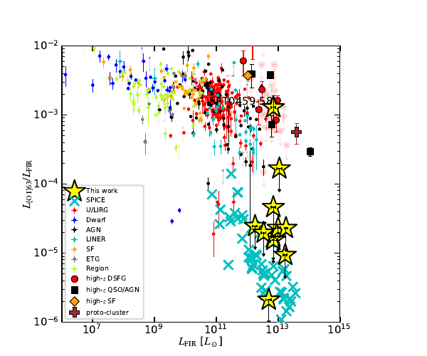

The survey finds only two tentative emission features
Ten galaxies remain undetected despite unusually deep limits. The deficit is present across the sample rather than being set by one unusual object.
Collaborator study · ALMA + SPICE
A dedicated ALMA survey finds the [O I] 63 μm line unexpectedly faint in dusty galaxies at redshift above four. Radiative-transfer comparisons with SPICE point to foreground absorption rather than an absence of atomic gas.

[O I] 63 μm should be an important coolant in warm, dense neutral gas. The survey asks whether it can serve as a robust tracer in the dusty, intensely star-forming galaxies common at high redshift.
ALMA targets the line in twelve strongly lensed dusty star-forming galaxies at z > 4. Lensing and deep integrations make these among the most sensitive high-redshift constraints on the transition, reaching roughly 10–100 times deeper than earlier work.
The central complication is radiative transfer. The lower level of the transition is easily populated in cooler foreground material, so a luminous background region can be absorbed by low-excitation molecular or atomic gas along the same sightline.
Ten galaxies remain undetected despite unusually deep limits. The deficit is present across the sample rather than being set by one unusual object.
The 63 μm transition is susceptible to absorption by cooler material in front of the emitting regions. The paper argues that narrow escape channels, viewing angle, and layered gas structure govern the emergent line.
Comparisons with line-transfer calculations through simulated galaxies reproduce the qualitative movement toward low emergent [O I]/FIR ratios, supporting self-absorption as a leading explanation.
An integrated non-detection does not imply little neutral gas. Resolved morphology, line profiles, and complementary transitions are needed to separate excitation, abundance, and absorption.
The simulations supply three-dimensional gas structure and sightlines that an integrated ALMA flux cannot recover on its own.
The comparison changes the scientific question from “Where is the [O I]?” to “Which paths allow [O I] photons to leave?” That makes the line a probe of unresolved gas geometry and radiative transfer, but also warns against using it as a one-number gas-mass estimator.
Interpretation boundary: SPICE supports the absorption scenario; it does not make self-absorption the only possible explanation for every non-detection. Excitation, metallicity, and sample selection still contribute.